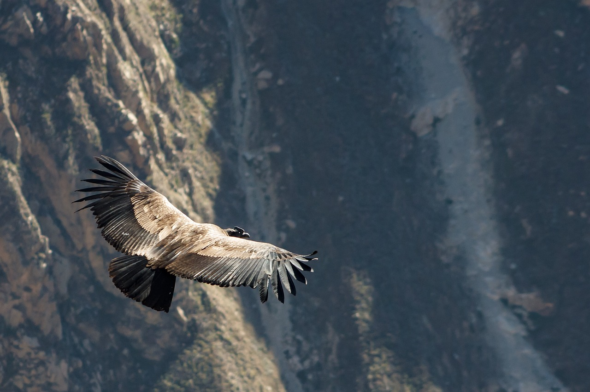

California condors: rescued from the brink of extinction

California Condor by Pixabay.
These magnificent birds are, once again, soaring through California skies.
California condors (Gymnogyps californianus) are among the largest, rarest birds in the world, and you'll find them soaring over the red-rock cliffs of southwestern California.
Huge and magnificent
The California condor is one of the largest flying birds in North America. With a wingspan of nearly 10 feet — and a body that's four to five feet long — the condor is the size of a small car. In flight, condors are breathtaking. They can reach speeds of 50 miles per hour when soaring, and they sometimes travel up to 200 miles a day in search of food.
Rare and recovering
Long ago, California condors soared over much of the western United States. By the mid 1800s, their numbers had dwindled, and they were mostly found in California — which is how they earned their name. Sightings were occasionally reported in other portions of the southwest, including Utah. Habitat loss, lead poisoning, poaching, power-line accidents and DDT contamination took a deadly toll. By 1987, the world's 22 remaining California condors, all living in the mountains above Santa Barbara, California, were captured and held in captivity.
A captive-breeding effort at southern California zoos helped the condors avoid extinction. In 1992, condors were reintroduced to the wild in California. Reintroductions followed in Arizona in 1996 and in Baja California, Mexico in 2003. There are now approximately 500 California condors in existence. Over half of those (about 350 birds) are flying free in parts of Arizona, California, Baja California and Utah. Condors are now producing chicks in the wild. The birds are protected under the Endangered Species Act and the Migratory Bird Treaty Act.